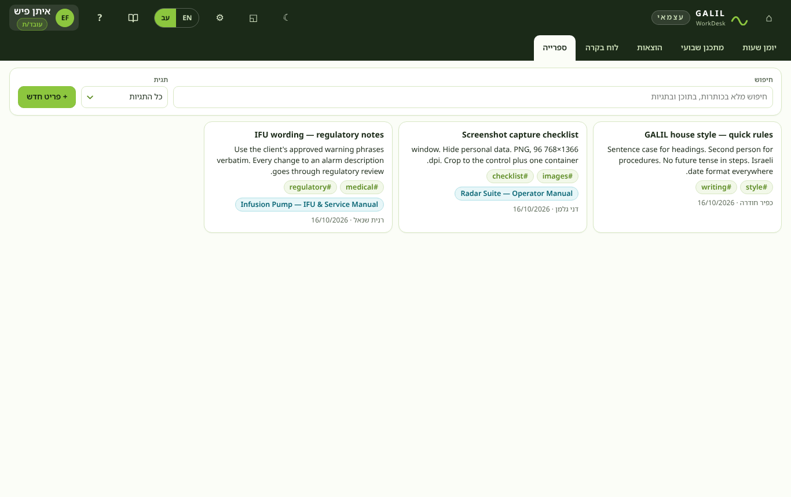

חלק א׳ · פורטל העובדים
פורטל העובדים
כתובת אחת, כניסה אחת, ארבעה מוצרים. פורטל העובדים הוא המקום שבו כל עובד/ת ב-GALIL מתחיל/ה את היום: דף הבית מציע את WorkDesk, Taskana, המדריך הזה ומאגר הידע — כל אחד באריח משלו — ופותח את אלה שהגישה שלכם כוללת.

ארבעת המוצרים
מה נשמר איפה
המוצרים חולקים מערך רשומות אחד, ולכל רשומה יש בית אחד:
| רשומה | נשמרת ב- | מוצגת ב- |
|---|---|---|
| אנשים, תפקידים, צוותים, גישה לפורטל | WorkDesk | Taskana (אנשים, אחראים), דף הבית של הפורטל |
| לקוחות, פרויקטים, הזמנות עבודה | WorkDesk | Taskana (לקוחות ופרויקטים, כל משימה) |
| תקציבים, שיבוצים, מכסות | WorkDesk | Taskana (מחווני תקציב ובנק שעות) |
| שעות, היעדרויות, הוצאות, אישורים | WorkDesk | Taskana (השעות שדווחו על כל משימה) |
| משימות, תגובות, תתי־משימות, רשימות בדיקה, תצוגות שמורות | Taskana | WorkDesk (רשימת משימה ב-Taskana ביומן השעות, וההצעות במתכנן השבועי) |
| מאמרים | מאגר הידע | — |
כך לקוח, פרויקט, הזמנת עבודה או אדם חדשים מוגדרים פעם אחת, ב-WorkDesk, ומופיעים ב-Taskana מיד; ושעות מדווחות פעם אחת, ב-WorkDesk, ונספרות על המשימה ב-Taskana שהן מציינות.
עברית ואנגלית
המתג EN / עב — בדף הבית, בסרגל העליון של WorkDesk, בסרגל הצד של Taskana ובראש המדריך ומאגר הידע — מחליף את השפה של הפורטל כולו בבת אחת. בעברית כל מסך נפרש מימין לשמאל; שמות, קודים, תאריכים ומספרים שומרים על הכיוון שלהם. הבחירה נשמרת במכשיר הזה. נתונים שאנשים מקלידים — שמות, תיאורים, תגובות — נשארים כפי שהוקלדו.
בהיר וכהה
הכפתור ☾ / ☀ מחליף את ערכת הנושא. כמו השפה, זו הגדרה אחת לכל הפורטל במכשיר הזה.
היכן נשמרים הנתונים
לפורטל אין שרת. הוא אוסף של דפי אינטרנט, והנתונים שלו נמצאים בשני קבצים — אחד ל-WorkDesk ואחד ל-Taskana — במקום שנקבע בקובץ config.js:
- GitHub
- הקבצים נשמרים בענף של מאגר החברה. כל אדם מתחבר פעם אחת עם אסימון גישה של GitHub (הפורטל מבקש אותו אחרי הכניסה).
- OneDrive
- הקבצים נשמרים בתיקייה ב-OneDrive, עם אותה כניסת Microsoft של הפורטל.
- מקומי
- הקבצים נשמרים רק בדפדפן הזה — לניסיון הפורטל עם נתוני ההדגמה.
התקנה והגדרה של הפורטל מוסברות במדריך ההתקנה.
כניסה והרשמה
נכנסים פעם אחת, בפורטל. WorkDesk, Taskana, המדריך ומאגר הידע משתמשים כולם באותה התחברות — אף אחד מהם לא מבקש שוב. רק כתובות @galiltc.co.il רשאיות להיכנס; קבלנים חיצוניים אינם נרשמים בעצמם — מנהל/ת מערכת מקים/ה אותם.

GalilWorkdesk1.כניסה עם Microsoft
- לחצו כניסה עם Microsoft.
- אשרו את הבקשה ב-Microsoft Authenticator — כאן נאכפת מדיניות האימות הדו־שלבי של החברה.
- בחרו את החשבון שלכם. תגיעו לדף הבית של הפורטל.
כש-Microsoft Entra ID אינו מוגדר (הגדרת ההדגמה), בוחר החשבונות מציג את החשבונות שנזרעו כדי שתוכלו לנסות כל תפקיד — ראו עיון.
כניסה עם דוא״ל וסיסמה
- הקלידו את הדוא״ל והסיסמה של החברה, ואז הקישו Enter או לחצו כניסה.
- אם הכתובת אינה מסתיימת ב-
@galiltc.co.il, הפורטל דוחה אותה עוד לפני בדיקת הסיסמה.
חמישה כישלונות רצופים נועלים את החשבון ל-15 דקות, עם ספירה לאחור של הדקות שנותרו.
שכחתי סיסמה
לחצו שכחתי סיסמה, הזינו את כתובת החברה שלכם, ויישלח קישור איפוס חד־פעמי שתקף 30 דקות.
יצירת חשבון — אשף בארבעה שלבים
לחצו יצירת חשבון בכרטיס הכניסה. האשף לא יעביר אתכם שלב שיש בו שגיאה.
- זהות — שם מלא באנגלית (בעברית — רשות; הוא מוצג כשהפורטל בעברית), דוא״ל החברה, מספר נייד לאימות דו־שלבי, וסיסמה או חשבון Microsoft מקושר. סיסמה צריכה לפחות 12 תווים, עם אות גדולה, אות קטנה וספרה.
- תפקיד — ברירת המחדל היא עובד/ת. אפשר לבחור בעצמכם עובד/ת, עובד/ת בכיר/ה או ראש צוות; כל תפקיד מעל ראש צוות מסומן דורש אישור. ראו תפקידים והרשאות.
- פרופיל — תואר תפקיד ומחלקה הם חובה. צוות, מנהל/ת ישיר/ה, תאריך התחלה, שעות לפי חוזה, סוג העסקה ותמונה הם רשות, אבל כדאי למלא אותם.
- אישור — בדקו את הסיכום, אשרו את מדיניות השימוש הפנימית ולחצו שליחה להפעלה.

ממתינים להפעלה
החשבון נוצר מיד אבל מוחזק. עד שמנהל/ת תפעול או המנכ"ל מפעילים אותו ב-WorkDesk (ניהול ← ממתינים להפעלה), הכניסה מציגה מסך המתנה ותו לא.
התחברויות והתנתקות
התחברות נמשכת 12 שעות של חוסר פעילות. התנתקות — בדף הבית, בפרופיל ב-WorkDesk או בסרגל הצד של Taskana — מנתקת אתכם מהפורטל כולו ומחזירה למסך הכניסה. כל כניסה והתנתקות נרשמות ביומן הביקורת של WorkDesk.
גם סימנייה ל-Taskana, למדריך או למאגר הידע עובדת. אם אינכם מחוברים, הדף אומר זאת ומציע מעבר לפורטל העובדים; אחרי הכניסה, פתחו אותו שוב מהאריח שלו.
גישה לפורטל
לכל אדם יש גישה משלו בפורטל: האם מותר לו לפתוח את WorkDesk, איזה תפקיד יש לו ב-Taskana, והאם הוא רשאי לקרוא את המדריך ואת מאגר הידע. הגישה נגזרת מהתפקיד שלו ב-WorkDesk, ואפשר לשנות אותה אדם־אדם.
ברירות המחדל
כל עוד איש לא שינה אותה, הגישה של אדם נגזרת מהתפקיד שלו ב-WorkDesk:
| תפקיד ב-WorkDesk | WorkDesk | תפקיד ב-Taskana | המדריך | מאגר הידע |
|---|---|---|---|---|
CEO OPS | כן | מנהל מערכת (Admin) | כן | כן |
PM TL | כן | מנהל (Manager) | כן | כן |
SEN EMP | כן | חבר צוות (Member) | כן | כן |
FIN | כן | צופה (Viewer) | כן | כן |
EXT | כן | חיצוני (External) | כן | לא |
VIEW | כן | צופה (Viewer) | כן | לא |
מה שאדם יכול לעשות בתוך WorkDesk הוא עדיין התפקיד שלו ב-WorkDesk (תפקידים והרשאות); מה שהוא יכול לעשות בתוך Taskana הוא התפקיד שלו ב-Taskana (תפקידים, תובנות ונתונים ב-Taskana). כל ברירות המחדל של הפורטל ושל Taskana, לפי תפקיד:
שינוי הגישה של אדם
- פתחו WorkDesk ← ניהול ← אנשים. העמודה גישה לפורטל מציגה את הגישה של כל אדם כתגים.
- לחצו ✎ ליד התגים.
- סמנו או נקו את WorkDesk, מדריך למשתמש ומאגר ידע, ובחרו תפקיד ב-Taskana — או אין גישה.
- שמירה. ברירות המחדל של התפקיד מחזיר את האדם לטבלה שלמעלה.

אדם שהגישה שלו מעולם לא שונתה נגזר מהתפקיד שלו: קידום עובד/ת לראש צוות הופך אותו/ה גם למנהל ב-Taskana. אדם שהגישה שלו שונתה ידנית שומר עליה עד שבוחרים ברירות המחדל של התפקיד.
השבתת אדם ב-WorkDesk סוגרת בפניו את הפורטל כולו — כולל Taskana, המדריך ומאגר הידע.
חלק ב׳ · WorkDesk
מה זה WorkDesk
WorkDesk הוא החלק בפורטל העובדים לזמן, לכסף ולרשומות החברה: שעות עבודה מדווחות, ימי מחלה וחופשה, תכנון שבועי, הוצאות, תקציבים, אישורים — והאנשים, הלקוחות, הפרויקטים והזמנות העבודה שכל שאר חלקי הפורטל משתמשים בהם. היום של אדם אחד נכנס למעלה; הניצולת של החברה, קצב שריפת התקציב ורשומת השכר יוצאים למטה.
פותחים אותו מהאריח WorkDesk בדף הבית של הפורטל. אין לו שרת משלו: רשומות החברה נשמרות בקובץ נתונים אחד — במאגר GitHub של החברה או ב-OneDrive, כפי שנקבע ב-config.js (ראו פורטל העובדים) — ועותק נשמר במטמון של הדפדפן שלכם תחת galil-workdesk-v1. ההתחברות שלכם נשמרת תחת galil-workdesk-session, והיא אותה התחברות ש-Taskana, המדריך ומאגר הידע משתמשים בה.
כשהפורטל פועל באחסון מקומי בלבד (בלי GitHub או OneDrive ב-config.js), ניקוי נתוני הדפדפן מוחק את רשומות החברה. מי שמנהל את WorkDesk צריך להוריד גיבוי באופן קבוע בכל מקרה — ראו גיבוי ושחזור.
שלושת צבעי השעות
כל שעה שמדווחת היא מאחד משלושה סוגים, וכמעט כל כלל ב-WorkDesk נובע מהסוג שנבחר.
- אדום · חברה
- זמן פנימי. לעולם אינו מחויב ללקוח, לעולם אינו נגרע מתקציב פרויקט, ולעולם אינו נחסם — שעות אדומות נרשמות מיד, יהיה אשר יהיה.
- צהוב · לקוח
- זמן לחיוב. נגרע מהמכסה שלכם בשיבוץ ומתקציב הפרויקט או הזמנת העבודה. צהוב וכחול הם סוגי השעות שמנוע הזכאות בודק.
- כחול · ניהול
- זמן ניהול של פרויקטים של לקוח. שעות כחולות פועלות בדיוק כמו שעות צהובות: הן משויכות ללקוח ולפרויקט, נגרעות מהמכסה האישית שלכם בשיבוץ ומתקציב הפרויקט או הזמנת העבודה, ועוברות לאישור באותן בדיקות. רק ראשי צוותים, מנהלי פרויקטים, מנהלי תפעול והמנכ"ל יכולים לדווח אותן; לאחרים האפשרות אינה מופיעה.
מחלה וחופשה הן סוגי ימים ולא סוגי שעות. בוחרים תאריך התחלה ותאריך סיום, וכל יום עבודה (ראשון עד חמישי) ביניהם נרשם כיום אחד. אלא אם אתם המנכ"ל, הם נשלחים למנהל/ת שלכם כבקשת היעדרות ונספרים רק אחרי אישור.
המונחים של WorkDesk
| מונח | המשמעות כאן |
|---|---|
| לקוח | הארגון שהעבודה נעשית עבורו. GALIL (internal) הוא גם לקוח — שם יושבות השעות האדומות. |
| פרויקט | גוף עבודה עבור לקוח אחד. יש לו סטטוס, בעלים ולפעמים תקציב. |
| הזמנת עבודה | חלק מתוקשר בחוזה של פרויקט, בקוד WO-[ראשי תיבות של הלקוח]-[6 ספרות]. פרויקט שמסומן לפי הזמנות עבודה מחייב הזמנה בכל רישום. |
| משימה | נשמרת ב-Taskana, לא ב-WorkDesk. רישום שעות יכול לציין את המשימה ב-Taskana שהשעות הלכו אליה; השעות מוצגות אז על המשימה ב-Taskana. |
| שיבוץ | הקישור בין אדם לפרויקט או להזמנת עבודה. הוא נושא את המכסה של אותו אדם בשעות. בלי שיבוץ, שעות צהובות וכחולות עוברות לאישור. |
| מכסה | השעות שאדם אחד רשאי לדווח בשיבוץ אחד. ריק — ללא הגבלה בתוך תקציב הפרויקט; 0 — משובץ אבל עוד לא ממומן. |
| תקציב | שעות (או כסף, עמודים, מילים, יחידות מותאמות) שסוכמו לפרויקט או להזמנת עבודה, לכל האנשים יחד. |
| מנוע הזכאות | הבדיקות שמחליטות, ברגע השמירה, אם רישום נרשם או עובר לאישור. ראו יומן שעות. |
תאריכים, שעות ומספרים
תאריכים מוצגים בסגנון ישראלי, 11/09/2026, ותאריכים ארוכים כמו יום שישי, 11/09/2026. השעות בשעון של 24 שעות. משך מחושב מההתחלה והסיום ומעוגל לחצי השעה הקרובה — לעולם לא מקלידים משך. סכומי כסף מוצגים עם סמל המטבע; ₪, $ ו-€ זמינים.
איך WorkDesk בנוי
כל מסך ב-WorkDesk עובד על אותו מערך קטן של רשומות. ברגע שיודעים מה הן ואיך הן מצביעות זו על זו, כל כלל בהמשך המדריך — למה רישום עבר לאישור, לאן הלכו השעות של תקציב, למי נשלחת בקשה — נובע מעצמו.
הרשומות
- לקוח
- חברה ש-GALIL עובדת עבורה, או GALIL (internal) לעבודה פנימית. כל דבר שמחויב מתחיל בלקוח.
- פרויקט
- עבודה עבור לקוח אחד — מדריך, מערכת עזרה, חבילת הדרכה. לפרויקט יש בעלים (בדרך כלל מנהל/ת פרויקט) וסטטוס.
- הזמנת עבודה
- שורת חוזה בתוך פרויקט — הזמנת הרכש של הלקוח לחלק אחד ממנו, עם קוד משלה כמו
WO-IAI-004182. לפרויקט יכולות להיות אפס, אחת או הרבה. - תקציב
- השעות שהלקוח משלם עליהן, מוצמדות להזמנת עבודה, לפרויקט או ללקוח שלם. תקציבי כסף מומרים לשעות (סכום ÷ תעריף שעתי); תקציבי עמודים, מילים ומותאמים סופרים גם תוצרים.
- שיבוץ
- הקישור בין אדם אחד לפרויקט או לאחת מהזמנות העבודה שלו, עם המכסה של אותו אדם — השעות שהוא רשאי לדווח שם לפני שרישומים שלו צריכים אישור.
- משימה ב-Taskana
- יחידת עבודה בתוך פרויקט — ולפעמים בתוך אחת מהזמנות העבודה שלו. משימות נוצרות ומתנהלות ב-Taskana, על הפרויקטים והזמנות העבודה ש-WorkDesk מגדיר.
- רישום שעות
- שעות שאדם אחד מדווח ליום אחד: אדום, צהוב או כחול, מול לקוח, פרויקט, הזמנת עבודה ולפעמים משימה ב-Taskana. ימי מחלה וחופשה הם גם רישומים.
- בקשת אישור
- כל דבר שמחכה להחלטה של מישהו אחר: רישום שעות שנכשל בבדיקה, היעדרות, הוצאה, הגדלת מכסה, השאלה או העברה בין צוותים, חשבון חדש.
- צוות ומנהל/ת ישיר/ה
- כל אדם יכול להשתייך לצוות שיש לו ראש צוות, ויש לו מנהל/ת ישיר/ה. יחד הם קובעים מי מקבל את הבקשות שלו.
הקמת עבודה ללקוח, לפי הסדר
- לקוח — ניהול ← לקוחות. בדרך כלל כבר קיים.
- פרויקט — ניהול ← פרויקטים. הגדירו בעלים; מנהל/ת הפרויקט הזה רואה את התקציבים שלו ומחליט/ה על בקשות חריגה מהתקציב שלו.
- הזמנות עבודה (אם הלקוח מוציא כאלה) — ניהול ← הזמנות עבודה. הזמנת העבודה הראשונה בפרויקט מסמנת אותו לפי הזמנות עבודה: מעכשיו כל רישום צהוב או כחול עליו חייב לציין הזמנת עבודה. הזנת שעות מתוקצבות ביצירת ההזמנה יוצרת גם את התקציב שלה.
- תקציב — ניהול ← תקציבים, על הזמנת העבודה (הנפוץ ביותר), על הפרויקט או על הלקוח.
- שיבוצים — ניהול ← שיבוצים ומכסות. שבצו כל אדם לפרויקט או להזמנת עבודה מסוימת, עם מכסה: מספר שעות,
0(משובץ אבל עוד לא ממומן) או ריק (ללא הגבלה בתוך התקציב). - משימות — ב-Taskana. הלקוח, הפרויקט, הזמנות העבודה שלו והאנשים שלו מופיעים שם מעצמם; צרו את המשימות על הפרויקט, ובחרו הזמנת עבודה, אחראי והערכת שעות.
- אנשים מדווחים עליו שעות. כל השאר — ניצול, אזהרות, אישורים, לוח הבקרה — נובע מהרישומים האלה.
איך הזמנות עבודה עובדות
- הזמנת עבודה שייכת תמיד לפרויקט אחד, ודרכו ללקוח אחד. הקוד שלה מוצע מראשי התיבות של הלקוח.
- יצירת הזמנת העבודה הראשונה בפרויקט מעבירה אותו ללפי הזמנות עבודה. בפרויקט כזה, טופס יומן השעות מסרב לשעות צהובות או כחולות בלי הזמנת עבודה.
- להזמנת עבודה יש בדרך כלל תקציב משלה. שעות שמדווחות על ההזמנה נגרעות רק מהתקציב שלה — לא מתקציב של הזמנה אחרת.
- שיבוץ יכול לציין הזמנת עבודה או רק את הפרויקט. שיבוץ להזמנה נבדק קודם; אם אין כזה, שיבוץ ברמת הפרויקט מכסה כל הזמנת עבודה בפרויקט.
- לחיצה על קוד הזמנת עבודה בכל טבלה מעתיקה אותו.
איך משימות Taskana עובדות עם שיבוצים
משימות ושיבוצים הם שני דברים שונים, שנשמרים בשני מקומות שונים:
| שיבוץ (WorkDesk) | אחראי על משימה (Taskana) | |
|---|---|---|
| עונה על | האם האדם הזה רשאי לרשום שעות על הפרויקט או ההזמנה הזו, וכמה? | האם האדם הזה עובד על פיסת העבודה הזו? |
| מוגדר ב- | WorkDesk ← ניהול ← שיבוצים ומכסות | שדה האחראי של המשימה ב-Taskana |
| שולט ב- | האם רישומים נרשמים או עוברים לאישור (לא משובץ, חריגה מהמכסה) | אילו משימות מוצעות לאדם ברשימת משימה ב-Taskana ביומן השעות |
| שעות | מכסה — נאכפת במנוע הזכאות, ומוצגת ב-Taskana כבנק השעות של האדם | הערכה — מושווית לשעות שדווחו על המשימה, לא נאכפת |
כשמישהו מדווח שעות עם משימה ב-Taskana:
- הוא עדיין צריך שיבוץ על הפרויקט או ההזמנה — משימה לבדה אינה מאפשרת לאיש לרשום שעות. בלי שיבוץ הרישום עובר לאישור כלא משובץ; האישור יוצר את השיבוץ החסר.
- המשימה היא מידע בלבד: היא לעולם לא שולחת רישום לאישור. הרשימה מציעה את המשימות הפתוחות של האדם על הפרויקט וההזמנה שנבחרו.
- השעות נספרות בשעות ב-WorkDesk של המשימה ב-Taskana (אדום, צהוב וכחול כאחד) ובמכסה של האדם ובתקציב (צהוב וכחול בלבד), בדיוק כמו רישום בלי משימה.
השאלה בין צוותים (ראו צוותים) יוצרת את השיבוץ עם האישור — מוגבל לתאריכי ההשאלה — כך שהאדם יכול לרשום שעות על הפרויקט מיד.
איך שעות נגרעות מתקציב
רק רישומים שנרשמו נגרעים. רישום שממתין לאישור מוצג בנפרד — בכתום, באישור — ונגרע רק אם וכאשר הוא מאושר.
- אילו שעות נספרות. שעות צהוב · לקוח וכחול · ניהול. שעות אדום · חברה, ימי מחלה וחופשה לעולם אינם נגרעים מתקציב או ממכסה.
- איזה תקציב. הספציפי ביותר: תקציב הזמנת העבודה של הרישום אם יש לה כזה, אחרת תקציב הפרויקט. תקציב פרויקט סופר כל שעה צהובה וכחולה בפרויקט, כולל שעות שנרשמו להזמנות העבודה שלו.
- איזו מכסה. השיבוץ של האדם על אותה הזמנת עבודה, אחרת השיבוץ שלו ברמת הפרויקט. גם המכסה וגם התקציב קטנים באותן שעות.
- הבדיקות. לפני הרישום, WorkDesk מוסיף את השעות החדשות למה שכבר נוצל. מעבר למכסה ← חריגה מהמכסה, לראש הצוות. מעבר לתקציב ← חריגה מהתקציב, למנהל/ת הפרויקט שבבעלותו התקציב.
- מה כרטיס התקציב מציג. מתוקצב, נוצל, באישור, נותר, אחוז ניצול (כתום ב-90%, אדום ב-100%) ותאריך מיצוי צפוי לפי קצב 30 הימים האחרונים. תקציבי כסף מציגים גם את הערך שנוצל (שעות שנוצלו × תעריף); תקציבי עמודים, מילים ומותאמים מציגים תוצרים מול היעד.
להזמנת העבודה WO-IAI-004182 יש תקציב כסף של ₪180,000 בתעריף ₪300 לשעה — 600 שעות מתוקצבות. יוסי משובץ אליה עם מכסה של 40 שעות ויש לו 38 שעות רשומות. הוא מדווח רישום צהוב של 4 שעות: 38 + 4 = 42 > 40, ולכן הרישום נשמר כממתין — חריגה מהמכסה ונשלח לראש הצוות שלו. עדיין לא נגרע דבר; כרטיס התקציב מציג 4 שעות באישור. כשראש הצוות מאשר — ואם רוצה, מגדיל את המכסה בשעתיים החריגה — הרישום נרשם, ה"נוצל" של התקציב עולה ב-4 שעות והערך שנוצל ב-₪1,200.
מי מקבל מה
| בקשה | נשלחת אל |
|---|---|
| רישום שעות — רוב הסיבות | ראש הצוות של האדם ← המנהל/ת הישיר/ה ← מנהל/ת פרויקט ← תפעול ← המנכ"ל |
| רישום שעות — חריגה מהתקציב | מנהל/ת פרויקט ← תפעול ← המנכ"ל |
| היעדרות מחלה או חופשה | קודם המנהל/ת הישיר/ה של האדם, ואז השרשרת שלמעלה. רישומים של המנכ"ל עצמו נרשמים ישירות. |
| השאלה או העברה בין צוותים | מי שהמבקש/ת בוחר/ת: ראש הצוות של האדם, המנהל/ת הישיר/ה שלו או המנכ"ל |
| הוצאה מעל התקרה של הסוג שלה | אותה שרשרת כמו רישום שעות — קודם ראש הצוות |
איש לעולם אינו מחליט על בקשה של עצמו, ומנהלי תפעול והמנכ"ל יכולים לטפל בכל בקשה. ראשי צוותים ומנהלים ישירים מוגדרים בניהול ← צוותים.
כל השאר, בשורה אחת
- מתכנן שבועי — שעות מתוכננות לכל יום מול אותם לקוחות, פרויקטים והזמנות עבודה; מושוות לשעות בפועל שנרשמו כמתוכנן, בפועל ופער. תכנון לעולם אינו מנצל תקציב.
- הוצאות — כסף או שעות שנדרשים מול לקוח, פרויקט והזמנת עבודה, עם אסמכתה. דרישה בתוך התקרה של סוג ההוצאה מאושרת עם השמירה; מעל התקרה היא עוברת לאישור. המאשרים מסמנים אותה אחר כך כשולמה או נדחתה. הוצאות אינן מקטינות תקציב שעות.
- לוח בקרה — רישומים שנרשמו בלבד, מסוננים לפי תקופה, אנשים, לקוח, פרויקט והזמנת עבודה.
- ספרייה — הערות משותפות, מתויגות, ולפעמים מקושרות ללקוחות ולפרויקטים.
- יומן ביקורת — כל שינוי שלמעלה, מי עשה אותו ומתי.
- Taskana — קורא מ-WorkDesk אנשים, לקוחות, פרויקטים, הזמנות עבודה, תקציבים, מכסות ושעות שנרשמו, ומציג אותם ליד המשימות. ראו מ-WorkDesk ל-Taskana.
תפקידים והרשאות
תשעה תפקידים ב-WorkDesk. מה שאתם רואים ב-WorkDesk, מה מותר לכם לשנות ובאילו רשומות של מי מותר לכם לגעת — הכול נובע מהתפקיד שלכם, כולל אילו לשוניות מופיעות בכלל. התפקיד קובע גם את ברירת המחדל של הגישה לפורטל ושל התפקיד ב-Taskana.
תשעת התפקידים
| קוד | תפקיד | מה הוא כולל |
|---|---|---|
EMP | עובד/ת | מדווח/ת שעות, מתכנן/ת את השבוע שלו/ה, מדווח/ת הוצאות, כותב/ת בספרייה. |
SEN | עובד/ת בכיר/ה | כמו עובד/ת. ההבדל הוא בוותק ובמה שהמתכנן השבועי ולוח הבקרה מראים למנהלים. |
TL | ראש צוות | כמו עובד/ת בכיר/ה, ובנוסף מאשר/ת שעות והוצאות של הצוות, משבץ/ת את הצוות לפרויקטים ורשאי/ת לדווח שעות כחול · ניהול. |
PM | מנהל/ת פרויקט | כמו ראש צוות, ובנוסף בעלים של פרויקטים, הזמנות עבודה, תקציבים ושיבוצים. |
OPS | מנהל/ת תפעול | כמו מנהל/ת פרויקט, על כל הלקוחות. מנהל/ת רשימות אב, עובדים, תפקידים והגדרות. |
FIN | כספים | קריאה בלבד בתקציבים, הוצאות, הזמנות עבודה וייצוא. אינו/ה מאשר/ת שעות. |
CEO | מנכ"ל / בעלים | גישה מלאה, כולל הקצאת תפקידים, מחיקה, יומן הביקורת והגדרות החברה. |
EXT | קבלן חיצוני | מדווח/ת שעות רק על הזמנות עבודה שהוא/היא משובץ/ת אליהן במפורש. בלי תקציבים, ספרייה או לוח בקרה; ב-Taskana — רק המשימות שהוא/היא עובד/ת עליהן. |
VIEW | צופה | גישת קריאה בלבד ללוח הבקרה, לבעל/ת עניין מסוים/ת. בלי זכויות דיווח. |
אותיות היקף
הרשאה אינה פשוט פועלת או כבויה — יש לה היקף שקובע של מי הרשומות שהיא מגיעה אליהן.
T · הצוות שלי פירושו: מי שחולק איתכם צוות, מי שכפוף לכם, וכל מי שבצוות שאתם מובילים. P · הפרויקטים שלי פירושו: פרויקטים שבבעלותכם, פרויקטים שאתם משובצים אליהם, וכל מי שדיווח עליהם שעות או מחזיק בהם שיבוץ.
טבלת ההרשאות המלאה
זו אותה טבלה ש-WorkDesk מציג תחת ⚙ ← תפקידים והרשאות. משימות אינן בה: מה שאדם רשאי לעשות ב-Taskana הוא התפקיד שלו ב-Taskana — ראו גישה לפורטל.

אילו לשוניות כל תפקיד רואה
לשוניות מוסתרות ולא מושבתות, כך ששני אנשים יכולים להסתכל על יישומים שונים מאוד.
| תפקיד | לשוניות מוצגות |
|---|---|
EMP SEN | יומן שעות · מתכנן שבועי · הוצאות · לוח בקרה · ספרייה |
TL | יומן שעות · מתכנן שבועי · הוצאות · ניהול (אנשים ושיבוצים בלבד, הצוות שלו) · אישורים · לוח בקרה · ספרייה |
PM OPS CEO | יומן שעות · מתכנן שבועי · הוצאות · ניהול (מלא) · אישורים · לוח בקרה · ספרייה |
FIN | יומן שעות (קריאה בלבד) · ניהול (תקציבים, קריאה בלבד) · לוח בקרה · ספרייה |
EXT | יומן שעות · מתכנן שבועי · הוצאות |
VIEW | יומן שעות (קריאה בלבד) · לוח בקרה |
ראיית ערכי תקציב מתחילה במנהל/ת פרויקט — בלשונית הניהול של ראש צוות יש אנשים ושיבוצים ומכסות של הצוות שלו, לא תקציבים, כך שהוא מאשר את שעות הצוות בלי לראות כמה הפרויקט שווה.


איך תפקיד נקבע או משתנה
- בהרשמה מבקשים תפקיד. כל דבר מעל ראש צוות יוצר בקשת שינוי תפקיד בנוסף לבקשת ההפעלה.
- מנהל/ת תפעול או המנכ"ל מאשרים את התפקיד בהפעלה — ורשאים לשנות אותו לפני ההפעלה.
- אחר כך התפקיד משתנה בניהול ← אנשים, ברשימה הנפתחת בעמודת התפקיד. כל שינוי נרשם ביומן הביקורת כ-
Role change EMP → SEN for …. - רק
OPSו-CEOרשאים לנהל עובדים ותפקידים. אף אחד אחר, בשום דרג, אינו יכול לקדם איש.
התמצאות במסך
סרגל עליון כהה אחד, שורת לשוניות אחת, וכמה כפתורי סמל שפותחים כל מה שאינו לשונית. הכפתור ⌂ מחזיר לדף הבית של הפורטל.

| רכיב | מה הוא עושה |
|---|---|
| ⌂ | חזרה לדף הבית של פורטל העובדים, שבו נמצאים Taskana, המדריך ומאגר הידע. |
| GALIL · WorkDesk | המותג. התג שלידו מראה היכן נשמרים הנתונים והאם השינוי האחרון כבר נשמר שם. |
| EN / עב | מחליף את כל פורטל העובדים בין אנגלית לעברית. בעברית כל מסך נפרש מימין לשמאל. הבחירה נשמרת במכשיר הזה. |
| KB · ? | פותחים את מאגר הידע ואת המדריך הזה בלשונית חדשה. |
| תג לא מקוון | מופיע כשהדפדפן מנותק. השינויים עדיין נכתבים מקומית. |
| סמל ◱ | השיבוצים והמכסות שלי — העבודה הממומנת שלכם והכפתור לבקשת שעות נוספות. ראו השיבוצים והמכסות שלי. |
| סמל ⚙ | ניהול מערכת — תפקידים והרשאות, הגדרות החברה, גיבוי ושחזור ויומן הביקורת. מוצג לכל מי שרשאי לגבות נתונים או לקרוא את יומן הביקורת. ניהול הרשומות השוטף נמצא בלשונית ניהול. |
| סמל ☾ / ☀ | מחליף בין ערכת נושא בהירה לכהה. הבחירה נשמרת במכשיר הזה וחלה על כל הפורטל, כולל תצוגת הטלפון שלמטה. |
| השם שלכם | פותח את הפרופיל — שעות לפי חוזה, מנהל/ת, שיטת כניסה, התחברויות והתנתקות. |
| תגי לשוניות | תג כתום על אישורים סופר בקשות פתוחות שמחכות לכם. |
| הודעות קופצות | אישורים מופיעים בתחתית המסך לכמה שניות. מחיקות מגיעות עם כפתור ביטול הפעולה — השתמשו בו לפני שהוא נעלם. |

עבודה עם טבלאות
כל טבלה ב-WorkDesk — יומן השעות, ההוצאות, כל חלק בניהול, טבלת התפקידים, יומן הביקורת והשיבוצים שלי — עובדת באותה דרך. לכל אחת יש שורת כלים ממש מעליה.

- מיון — לחיצה על כותרת עמודה ממיינת א←ת (הנמוך קודם), לחיצה נוספת ת←א (הגבוה קודם), ולחיצה שלישית מבטלת. ▲ או ▼ ליד הכותרת מראים את המיון הפעיל. הבורר מיון וכפתוריו בשורת הכלים עושים אותו דבר. תאריכים ומספרים ממוינים לפי ערך, ותאים ריקים תמיד בסוף.
- הזזת עמודה — גררו את הכותרת שלה אל עמודה אחרת, או בחרו אותה בהזזת עמודה והשתמשו בחיצים.
- שינוי רוחב — גררו את קצה הכותרת. לחיצה כפולה על הקצה, או ↔ רוחב, מחזירה רוחב אוטומטי שמתאים לתוכן.
- איפוס — ⇄ סדר מחזיר את סדר העמודות המקורי; ↺ הכול מנקה מיון, סדר ורוחב יחד.
תצוגות שמורות. ＋ שמירה שומר את המיון, סדר העמודות והרוחב הנוכחיים בשם; שמירה בשם קיים מחליפה אותו. בחירת תצוגה מרשימת תצוגה מחילה אותה. כשתצוגה נבחרה, ☆ הופך אותה לנפתחת אוטומטית בכל פעם שהטבלה נפתחת (הוא הופך ל-★); לחיצה נוספת מבטלת. 🗑 מוחק את התצוגה. תצוגות שייכות לכם ולטבלה אחת — לכל אדם יש משלו, ותצוגה שנשמרה ביומן השעות לא תוצע בהוצאות.
galil-workdesk-table-views, בנפרד מנתוני WorkDesk, ולכן אינן חלק מגיבוי ואינן עוברות למחשב אחר. מיון או שינוי עמודות שלא נשמרו נשארים עד טעינה מחדש של הדף; אחריה הטבלה נפתחת בתצוגת ★ שלכם, או בפריסה המקורית.בטלפון
מתחת ל-820 פיקסלים, WorkDesk מחליף את כל המסגרת בגרסת טלפון ייעודית במקום לדחוס את פריסת המחשב לעמודה צרה: עמוד אחד בכל פעם, סרגל ניווט תחתון, בוררי תאריך ושעה של המכשיר, וכל יעד הקשה בגובה 44 פיקסלים לפחות. אלה אותם נתונים ואותם כללים — כל רישום עדיין עובר במנוע הזכאות — רק בפריסה לאגודל במקום לעכבר.
| לשונית תחתונה | מה יש בה |
|---|---|
| זמן | טיימר רץ — ▶ הפעלת הטיימר, ואז ■ עצירה ודיווח בסיום, שפותח את טופס הרישום עם שעות ההתחלה והסיום כבר ממולאות. דיווח בלי טיימר מדלג ישר לטופס. כל רישום מתחת אפשר לערוך, לשכפל (אותן אפשרויות כמו במחשב — ראו שכפול רישום) או למחוק. |
| תכנון | המתכנן השבועי, יום אחד בכל פעם. |
| הוצאות | דיווח הוצאה פותח גיליון תחתון עם אותם שדות — ואותו פקד צירוף אסמכתה — כמו הטופס במחשב. |
| עוד | ספרייה, אישורים (אם אתם מאשרים משהו), השיבוצים והמכסות שלי, הפרופיל שלי, דף הבית של הפורטל, Taskana, המדריך ומאגר הידע. |


לוח הבקרה, הניהול וניהול המערכת בנויים למסך גדול יותר ואינם חלק מגרסת הטלפון. הפרופיל שלי ← תצוגה במכשיר הזה מאפשר לקבע תמיד טלפון או תמיד מחשב במקום לעקוב אחרי רוחב החלון.
יומן שעות
המקום שבו מדווחים את היום. טופס בראש העמוד, חודש של רישומים מתחתיו, ומנוע ביניהם שמחליט אם כל רישום נרשם או עובר למאשר/ת.

דיווח שעות
- קבעו תאריך, או לחצו היום. תאריכים עתידיים נדחים — אותם מתכננים במתכנן השבועי.
- בחרו סוג: עבודה, מחלה או חופשה. מחלה וחופשה מסתירות את שדות השעה — ראו ימי מחלה וחופשה בהמשך.
- קבעו התחלה וסיום מרשימות השעה והדקה. שעות מתמלא מעצמו, מעוגל לחצי השעה הקרובה.
- בחרו סוג שעות — אדום · חברה, צהוב · לקוח, או — אם אתם מנהלים פרויקטים של לקוחות — כחול · ניהול.
- לצהוב או כחול, בחרו לקוח, פרויקט והזמנת עבודה אם הפרויקט מנוהל לפי הזמנות עבודה. אם רוצים, בחרו את המשימה ב-Taskana שהזמן הלך אליה.
- כתבו תיאור — הוא חובה. הערות הן רשות.
- לחצו הוספת רישום.

ללקוח, לפרויקט ולהזמנת העבודה יש מתג הקלדה חופשית לדבר שעוד אינו ברשימת האב. מותר להקליד שם, אבל הרישום עובר אז לאישור כפריט שאינו ברשימה, ועם האישור השם הופך לרשומה אמיתית ברשימת האב.
ימי מחלה וחופשה
- קבעו את הסוג למחלה או חופשה.
- קבעו מתאריך ועד תאריך. ימים סופר את ימי העבודה (ראשון עד חמישי) בטווח — שישי ושבת מדולגים. תאריכים עתידיים מותרים, כך שאפשר לבקש חופשה מראש. בקשה אחת מכסה עד 60 ימי עבודה.
- במחלה, צרפו באישור מחלה את האישור מהמרפאה או מהרופא — PDF או תמונה, עד 2MB. אפשר להחליף או להסיר אותו לפני השליחה.
- הוסיפו תיאור ולחצו שליחת בקשה.
הטופס מראה למי הבקשה נשלחת: המנהל/ת הישיר/ה שלכם, או — אם אין — שרשרת האישורים הרגילה. כל יום בטווח נשמר כממתין ונשאר מחוץ לסיכומים עד שהמנהל/ת מאשר/ת או דוחה את כל הבקשה בבת אחת. דחייה מבטלת כל יום בה, והסיבה מוצגת על כל אחד.
המנכ"ל הוא התפקיד היחיד שימי המחלה והחופשה שלו נרשמים ישירות, בלי בקשה — לו ולכל אדם אחר.
אישור מצורף מופיע ככפתור 📎 על כל יום ביומן השעות ועל כרטיס הבקשה באישורים; לחיצה פותחת את המסמך.
מה הטופס מסרב לשמור
- שעת סיום שאינה אחרי שעת ההתחלה.
- תיאור ריק.
- שעות צהובות או כחולות בלי לקוח או בלי פרויקט. אם זה פנימי — עברו לאדום.
- בלי הזמנת עבודה בפרויקט שמנוהל לפי הזמנות עבודה.
- חפיפה עם רישום אחר שכבר דיווחתם באותו יום — ההודעה מציינת את השעות המתנגשות.
- רישום זהה (אותו תאריך, אותן התחלה וסיום, אותו תיאור).
- תאריך עתידי (רישומי עבודה בלבד — מחלה וחופשה יכולות להיות בעתיד).
- מחלה או חופשה ביום שכבר רשום כהיעדרות, או טווח בלי ימי עבודה.
- תאריך בתוך חודש שנסגר לשכר.
מנוע הזכאות
ברגע השמירה, WorkDesk מריץ את הבדיקות האלה לפי הסדר. הראשונה שנכשלת מעבירה את הרישום לממתין, רושמת את הסיבה ופותחת בקשת אישור.
| # | בדיקה | תוצאה |
|---|---|---|
| 1 | מחלה או חופשה | ממתין — בקשת היעדרות, אל המנהל/ת הישיר/ה. נרשם ישירות רק כשהמנכ"ל רושם. |
| 2 | אדום · חברה | נרשם ישירות — לעולם אינו תלוי בשיבוץ, מכסה או תקציב. עדיין נספר במגבלות היומיות הרכה והקשיחה שלמטה. כחול · ניהול אינו פטור: הוא עובר בבדיקות 3–8 בדיוק כמו צהוב. |
| 3 | לקוח, פרויקט או הזמנת עבודה שאינם ברשימה | ממתין — פריט שאינו ברשימה. |
| 4 | משובץ לפרויקט או להזמנה? | ממתין — לא משובץ. |
| 5 | המכסה שלכם בשיבוץ | ממתין — חריגה מהמכסה. |
| 6 | תקציב הפרויקט או הזמנת העבודה | ממתין — חריגה מהתקציב. עולה לבעלים של הפרויקט ולא לראש הצוות. |
| 7 | מגבלה יומית קשיחה (ברירת מחדל 12 שעות) | ממתין — חריגה מהמגבלה היומית. |
| 8 | מגבלה יומית רכה (ברירת מחדל 9 שעות) | נרשם, מסומן בכתום. לא צריך אישור. |
| 9 | כל השאר | נרשם. משימה ב-Taskana על הרישום לעולם אינה משנה את התוצאה. |
הניצול סופר שעות צהובות וכחולות שנרשמו. שום דבר ממתין אינו נספר מול מכסה או תקציב, ואינו מופיע בשום סיכום על המסך — ולכן שעות ממתינות מוצגות בנפרד, בכתום, כבאישור.
ברגע שבוחרים פרויקט, באנר מעל הטופס מראה איפה אתם עומדים בשיבוץ: אפור מ-75%, כתום מ-90%, אדום ב-100% — "רישומים נוספים מתקבלים, אבל עוברים לאישור." אף פעם לא נחסמים; רק מנותבים.
סטטוסים של רישום
| סטטוס | משמעות |
|---|---|
| נרשם | נספר. כלול בסיכומים, בתקציבים ובייצוא. |
| ממתין | מחכה למאשר/ת. מוחרג מכל סיכום. השורה צבועה ומציגה את הסיבה. |
| בוטל | נדחה. נשאר גלוי לכם עם הסיבה של המאשר/ת, ולעולם אינו תורם שעות. |
| נעול | החודש נסגר לשכר. לא ניתן לעריכה; שינוי מחייב בקשת עריכה רטרואקטיבית. |
עריכה, מחיקה ותיקון
- ✎ טוען רישום בחזרה לטופס. שמירת רישום ממתין מריצה את המנוע מחדש; שמירת רישום שנרשם בידי מאשר/ת משאירה אותו רשום.
- 🗑 מוחק אותו ומבטל כל אישור ממתין שקשור אליו. ההודעה מציעה ביטול הפעולה.
- העמודה סטטוס פרויקט מציגה את הסטטוס הנוכחי של הפרויקט כפי שנקבע בניהול ← פרויקטים. כאן היא לקריאה בלבד; מסנן סטטוס הפרויקט משתמש באותו ערך.
- את הרישומים שלכם מותר לערוך תמיד. עריכת רישומים של אחרים מחייבת
editOthersTime— ראש צוות בתוך הצוות, מנהל/ת פרויקט בתוך הפרויקטים שלו, מנהל/ת תפעול והמנכ"ל בכל מקום. - פתיחת דיווח שעות על המשימה ב-WorkDesk ממשימה ב-Taskana מביאה אתכם לכאן כשהטופס כבר מכוון ללקוח, לפרויקט, להזמנת העבודה ולמשימה.
- לחיצה על קוד הזמנת עבודה בכל מקום בטבלה מעתיקה אותו ללוח — שימושי להדבקה בדוא״ל או במערכת אחרת. הודעה קטנה מציינת מה הועתק.
שכפול רישום
הכפתור ⧉ ליד רישום עבודה (⧉ שכפול… בטלפון) פותח את אפשרויות השכפול:
- היום הקודם, היום הבא, השבוע הקודם, השבוע הבא — עותק אחד, יום אחד או שבעה ימים משם.
- מותאם — הקלידו מספר ימים ובחרו ימים אחורה או ימים קדימה. לבד זה יוצר עותק אחד במרחק הזה. סמנו העתקה לכל יום עבודה שביניהם כדי להעתיק את הרישום לכל ראשון–חמישי בטווח — למשל 5 ימים אחורה מעתיק אותו לכל יום עבודה בחמשת הימים האחרונים. השורה מתחת לשדה מציגה את התאריך, או כמה ימים, לפני שלוחצים שכפול.
- תאריך מסוים — בחרו כל תאריך עד היום ולחצו שכפול.
כל עותק לוקח את הלקוח, הפרויקט, הזמנת העבודה, המשימה ב-Taskana, סוג השעות, השעות והתיאור של הרישום, ועובר במנוע הזכאות כרישום חדש — הוא יכול להגיע לממתין גם אם המקור נרשם, למשל אם העותק יחרוג עכשיו ממכסה. תאריכים שאינם יכולים לקבל עותק מדולגים ומפורטים בהודעה: תאריכים אחרי היום (אותם מתכננים במתכנן השבועי), חודשים סגורים, וימים שבהם העותק יחפוף לרישום קיים או יחזור עליו בדיוק.
סינון וסיכומים
ניווט החודשים זז חודש אחד בכל פעם; היום חוזר לחודש הנוכחי. מתחתיו מסננים לפי עובד/ת, לקוח, פרויקט, הזמנת עבודה, משימה ב-Taskana, סוג רישום, סטטוס פרויקט וסטטוס רישום. ניקוי מאפס את כל המסננים. הסיכומים תמיד מתארים את התצוגה המסוננת. למיון, סידור או שינוי רוחב של עמודות ולשמירת הפריסה כתצוגה, ראו עבודה עם טבלאות.
ייצוא
⬇ התצוגה הזו מייצא את החודש המסונן. ⬇ הכול מייצא את כל מה שבהיקף ההרשאה שלכם — שלעובד/ת, עובד/ת בכיר/ה או קבלן חיצוני פירושו הרשומות שלהם בלבד. רישומים ממתינים עוברים לגיליון נפרד כדי שלעולם לא ייחשבו לזמן שדווח. ראו ייצוא לאקסל.
מתכנן שבועי
כוונה, לא רישום. רישומים מתוכננים לעולם אינם נספרים כשעות מדווחות — הם קיימים כדי לראות את השבוע לפני שהוא קורה ולהשוות אחריו.

תכנון בלוק
- בחרו יום, שבוע או חודש (רשת של ארבעה שבועות), וזוזו עם ‹ › או השבוע.
- לחצו + תכנון בעמודת יום.
- קבעו התחלה וסיום — השעות המחושבות מופיעות מתחת — ואז סוג שעות, לקוח, פרויקט, הזמנת עבודה, משימה ב-Taskana ותיאור.
- שמירה. אפשר לגרור את הכרטיס ליום אחר בכל עת.
הצעות מהמשימות שלכם ב-Taskana
המשימות שלכם ב-Taskana שיש להן תאריך יעד ועוד לא הושלמו מופיעות כתגים בצבע טורקיז מעל הרשת. גררו אחת ליום, והרישום המתוכנן נוצר עם הפרויקט, הזמנת העבודה והכותרת של המשימה.
קיבולת, פער והעתקה
- התגים מתוכנן, בפועל ופער משווים את התכנון לזמן שנרשם באותה תקופה.
- קיבולת משווה את התכנון לשעות לפי חוזה (שעות שבועיות, מותאמות לטווח המוצג). תכנון מעבר לקיבולת צובע את התג בכתום ומוסיף באנר.
- העתקת השבוע משכפלת כל רישום מתוכנן מוצג שבעה ימים קדימה.
- ⬇ ייצוא מפיק גיליון של תכנון מול ביצוע עם עמודת פער.
תכנון עבור מישהו אחר
עם planOthersWeek מופיע בורר תכנון עבור. ראשי צוותים רואים את הצוות שלהם, מנהלי פרויקטים את האנשים של הפרויקטים שלהם, מנהלי תפעול והמנכ"ל — את כולם. שמירת שינוי בתכנון של מישהו אחר שולחת לו הודעה.
הוצאות
כסף או שעות, מוצמדים ללקוח ולפרויקט, עם אסמכתה כשסוג ההוצאה דורש זאת.

רישום הוצאה
- קבעו תאריך ושעה.
- בחרו סוג הוצאה. סוגים עם תקרה מציגים אותה ברשימה.
- בחרו סוג ערך: כסף (עם מטבע) או שעות.
- אם רוצים, הצמידו אותה ללקוח, לפרויקט ולהזמנת עבודה.
- כתבו תיאור — חובה. הוסיפו הערות אם זה עוזר.
- צרפו אסמכתה אם הסוג דורש, ואז הוספת הוצאה.
הוצאה עד תקרת האישור האוטומטי של הסוג שלה מאושרת במקום. מעל התקרה היא נשמרת כהוגש ומנותבת לאישור. כשהסוג דורש אסמכתה, הטופס לא יישלח בלי קובץ מצורף.
סטטוס החזר
ארבעה מצבים — הוגש, אושר, שולם, נדחה. מי שרשאי לאשר הוצאות משנה אותו מהרשימה בטבלה — חוץ מההוצאות של עצמו, שעליהן מחליט מישהו אחר. כל השאר רואים תג צבעוני.
דיווח עבור מישהו אחר
עם approveExpenses מופיע בטופס בורר עבור, בהיקף האנשים שאתם רואים. אותם אנשים מופיעים במסנן החודש.
עריכה, מחיקה וייצוא
✎ טוען את ההוצאה בחזרה לטופס; 🗑 מוחק אותה, עם ביטול. בהוצאות שלכם מותר לפעול תמיד, ובהוצאות של אחרים — אם אתם רשאים לאשר הוצאות. ⬇ התצוגה הזו ו-⬇ הכול מייצאים עם שמות קובצי האסמכתה בעמודה משלהם.
החלפה או הסרה של אסמכתה
כשקובץ מצורף, הוא מופיע כתג ליד כפתור בחירת הקובץ עם שני פקדים: סמל החלפה שפותח שוב את בוחר הקבצים ומחליף את הקובץ במקומו, ו-✕ שמסיר אותו — שאר ההוצאה לא משתנה. ספירת 📎 בטבלה היא עצמה כפתור: לחיצה פותחת מחדש את שורת ההוצאה בטופס כדי להחליף או להסיר את הקובץ.
אם סוג ההוצאה דורש אסמכתה, הסרת הקובץ היחיד מציגה את אותה אזהרה שהטופס מציג כשמעולם לא צורף קובץ — שמירת השינויים חסומה עד שבוחרים קובץ חדש.
ניהול
הלשונית התפעולית השוטפת — תקציבים, הזמנות עבודה ורשומות האב של החברה — מאחורי לשונית ניהול אחת בסרגל העליון. תתי־הלשוניות שלה: אנשים · צוותים · לקוחות · פרויקטים · הזמנות עבודה · תקציבים · שיבוצים ומכסות · סוגי הוצאות · תור אימות, ובסוף ממתינים להפעלה לתפעול ולמנכ"ל. אילו מהן תראו תלוי בתפקיד שלכם. איך הרשומות האלה קשורות זו לזו — ראו איך WorkDesk בנוי. כל מה שנשמר כאן — אנשים, לקוחות, פרויקטים והזמנות עבודה — מופיע גם ב-Taskana, לקריאה בלבד, ברגע שהוא נשמר.
מנהלי פרויקטים רואים תקציבים בפרויקטים שלהם. מנהלי תפעול, המנכ"ל וכספים רואים את כולם; כספים רשאים להסתכל אבל לא לשנות. לאחרים אין חלק תקציבים — ולשונית הניהול עצמה מופיעה רק כשלפחות חלק אחד רלוונטי לכם.

יצירת תקציב
- לחצו + תקציב חדש.
- בחרו לקוח, ואז צמצמו לפרויקט ואם רוצים להזמנת עבודה. השארת הפרויקט ריק מתקצבת את כל הפרויקטים של הלקוח יחד.
- בחרו בסיס תמחור ומלאו את השדות המתאימים.
- שמירת תקציב.
| בסיס | מה מזינים |
|---|---|
| כסף | מטבע, סכום ותעריף שעתי. השעות המתוקצבות מחושבות — סכום ÷ תעריף — והשדה הופך לקריאה בלבד. |
| שעות | שעות מתוקצבות ישירות. |
| עמודים / מילים / מותאם | יחידות מתוקצבות, שם היחידה, כמה הופקו עד כה, ושעות מתוקצבות לצדן. |

קריאת כרטיס תקציב
| נתון | איך הוא מחושב |
|---|---|
| נוצל | שעות צהובות וכחולות שנרשמו בהיקף התקציב. תקציב הזמנת עבודה סופר רק את ההזמנה; תקציב פרויקט סופר את הפרויקט. |
| באישור | שעות צהובות וכחולות ממתינות באותו היקף. עוד לא נוצלו — אבל בדרך. |
| נותר | מתוקצב פחות נוצל. הופך לאדום כשהוא שלילי. |
| ערך שנוצל | בבסיס כסף בלבד — שעות שנוצלו × תעריף. |
| תוצרים | בבסיסי יחידות בלבד — מה שהופק מול היחידות המתוקצבות. |
| מיצוי צפוי | מחושב מקצב השריפה של 30 הימים האחרונים. מציג עכשיו אם כבר מוצה, ו-— אם לא נשרף דבר. |
ב-90% הכרטיס מציג באנר כתום, גלוי לבעלי הפרויקט ולכספים. ב-100% הוא הופך לאדום, וכל רישום צהוב או כחול נוסף על הפרויקט מנותב לאישור.
היסטוריית שינויים
עריכת הבסיס, הסכום, התעריף, השעות, היחידות או המטבע של תקציב נוספת להיסטוריה שלו. הכפתור היסטוריה פותח טבלה של מתי, מי, איזה שדה, והערכים לפני ואחרי.
הזמנות עבודה

- עברו להזמנות עבודה ולחצו + הזמנת עבודה חדשה.
- בחרו את הפרויקט — WorkDesk מציע קוד בצורה
WO-[ראשי תיבות של הלקוח]-[6 ספרות]. מותר לשנות את הספרות, אבל הצורה נאכפת. - תנו לה כותרת, סטטוס (פעיל, בהמתנה, סגור), אסמכתת חוזה ותאריכים.
- הזינו שעות מתוקצבות להזמנת העבודה, ורשומת תקציב תיווצר או תתעדכן עבורכם.

יצירת הזמנת העבודה הראשונה בפרויקט מסמנת אותו לפי הזמנות עבודה. מעכשיו כל רישום צהוב או כחול עליו חייב לציין הזמנת עבודה. ההזמנה מופיעה מיד גם ב-Taskana, בשדה הזמנת עבודה של משימות הפרויקט.
אנשים
כולם, עם דוא״ל, תפקיד, צוות, מנהל/ת וסטטוס. מנהלי תפעול והמנכ"ל משנים תפקידים מהרשימה כאן ויכולים להשבית או להפעיל מחדש חשבון — חוץ משלהם, שאותו משנה מנהל/ת אחר/ת. כל השאר רואים את אותה רשימה לקריאה בלבד. העמודה בשימוש סופרת את הרשומות שכל אדם קשור אליהן. העמודה גישה לפורטל מראה אילו חלקים של הפורטל האדם יכול לפתוח ואת התפקיד שלו ב-Taskana; מנהלי תפעול והמנכ"ל משנים אותה עם ✎ — ראו גישה לפורטל.

צוותים
תת־הלשונית השנייה, אחרי אנשים. ראשי צוותים, מנהלי פרויקטים, מנהלי תפעול והמנכ"ל מקימים כאן צוותים, משבצים בהם אנשים, בוחרים לכל חבר את המנהל/ת הישיר/ה ומבקשים אנשים מצוותים אחרים. כל צוות בחברה מוצג ככרטיס; הצוותים שלכם קודם.
כרטיס הצוות
כל כרטיס מציג את הצבע וראשי התיבות של הצוות, את השם, המחלקה והקוד הקצר, את התיאור, את ראש הצוות, המיקום ואיש הקשר, את הלקוחות העיקריים ואת החברים כתמונות — חברים זמניים (בהשאלה מצוות אחר) מוקפים בקו מקווקו. בצוותים שלכם הכרטיס מציע ניהול ועריכת פרטים; בצוותים אחרים — בקשת חבר צוות.
יצירה או התאמה של צוות
- לחצו + צוות חדש (או עריכת פרטים בכרטיס).
- מלאו את שלושת שדות החובה: שם, תיאור ומחלקה. רשימת המחלקות מכסה את המחלקות המקובלות בחברת כתיבה טכנית — או בחרו אחר — הקלידו והקלידו משלכם.
- אם רוצים, קבעו קוד קצר, צבע, דוא״ל או ערוץ של הצוות, מיקום ולקוחות עיקריים. הלקוחות העיקריים מוצעים ראשונים כשהצוות מבקש אדם בהשאלה.
- מנהלי תפעול והמנכ"ל בוחרים גם את ראש הצוות; כל מי שיוצר צוות אחר הופך לראש שלו.
- לחצו יצירת צוות או שמירת הצוות.
שיבוץ אנשים פנויים
הלוח אנשים פנויים מציג כל מי שאין לו צוות, אין לו מנהל/ת ישיר/ה, או שניהם. בחרו אחד מהצוותים שלכם בשיבוץ בצוות…: האדם מצטרף אליו וראש הצוות הופך למנהל/ת הישיר/ה שלו.
ניהול בכרטיס שלכם פותח את הצוות: שנו לכל חבר את המנהל/ת הישיר/ה מהרשימה, הוציאו מישהו עם הסרה (המנהל/ת הישיר/ה נשמר/ת), או הוסיפו אדם עם הוספת אדם והמנהל/ת הישיר/ה. מחיקת הצוות אפשרית כשאין בו חברים.
בקשת אדם מצוות אחר
השתמשו בבקשת חבר צוות בכרטיס של צוות אחר, בכפתור שלמעלה, או בבקשת מישהו מצוות אחר בתוך הניהול. בחרו מה אתם מבקשים:
| זמני — לפרויקט של לקוח | העברה קבועה | |
|---|---|---|
| ממלאים | האדם, הצוות שלכם, הלקוח, הפרויקט, תאריכי מ- ועד, מכסת שעות (רשות) וסיבה | האדם, הצוות שלכם וסיבה |
| נשלח אל | מי שבוחרים בשליחת הבקשה אל: ראש הצוות של האדם, המנהל/ת הישיר/ה שלו, או המנכ"ל | |
| מופיע כ- | השאלה בין צוותים באישורים | העברה בין צוותים באישורים |
| עם האישור | האדם שומר על הצוות והמנהל/ת שלו, מופיע בצוות שלכם כחבר זמני בתאריכים האלה, ומקבל שיבוץ על הפרויקט (עם המכסה שקבעתם, בתוקף רק בין התאריכים) | האדם עובר לצוות שלכם וראש הצוות שלכם הופך למנהל/ת הישיר/ה שלו |
רשימת בקשות צוות בתחתית תת־הלשונית מציגה את הבקשות ששלחתם, את אלה שהתבקשתם להחליט עליהן ואת אלה שמערבות את הצוותים שלכם, עם הסטטוס שלהן.
מי רשאי לעשות מה
ראשי צוותים ומנהלי פרויקטים מנהלים רק את הצוותים שהם מובילים. הם יכולים לשבץ אנשים שאין להם צוות או שנמצאים בצוות אחר שלהם — אבל לא את עצמם, מנהל/ת תפעול או המנכ"ל; את כל השאר צריך לבקש. איש אינו משנה את המנהל/ת הישיר/ה של עצמו. מנהלי תפעול והמנכ"ל מנהלים כל צוות ובוחרים את ראש הצוות.
המנהל/ת הישיר/ה מקבל/ת את בקשות המחלה והחופשה של האדם. ראש הצוות ראשון בתור לשאר בקשות האישור שלו, והמנהל/ת הישיר/ה אחריו. לניתוב המלא ראו איך WorkDesk בנוי.
ממתינים להפעלה
הרשמות חדשות מחכות כאן. לכל אחת:
- אשרו או שנו את התפקיד שהתבקש.
- קבעו צוות.
- תנו פרויקט ראשון ומכסה בשעות.
- הפעלה — או דחייה, שסוגרת את החשבון.

שיבוצים ומכסות
הפקד שמחליט של מי השעות הצהובות והכחולות נרשמות בשקט ושל מי עוברות לאישור.
| ערך המכסה | השפעה |
|---|---|
ריק (∞) | ללא הגבלה בתוך תקציב הפרויקט. |
| 0 | משובץ אבל עוד לא ממומן — כל רישום עובר לאישור. |
| מספר | השעות שהאדם רשאי לדווח בשיבוץ הזה לפני שנדרש אישור. |
המכסה נקבעת לכל שיבוץ, לא לכל אדם: אותו כותב יכול להחזיק 40 שעות בהזמנת עבודה אחת ו-200 באחרת. עורכים מספר במקום, והוא נשמר כשיוצאים מהשדה. המכסה שלכם מוצגת כאן לקריאה בלבד — מגדילים אותה דרך השיבוצים שלי ← בקשת שעות, כמו כולם; 🗑 מסיר את השיבוץ. שעות כחולות נשענות על המכסה ועל התקציב בדיוק כמו צהובות. ב-Taskana המכסה מוצגת כבנק השעות של האדם.

לקוחות, פרויקטים וסוגי הוצאות
כל אחד הוא טבלה עם טופס הוספה מעליה. שינוי שם עם ✎, הסרה עם 🗑.
העמודה בשימוש סופרת את הרשומות השמורות שמפנות לפריט. אם היא מעל אפס, ההסרה נדחית. השביתו או סגרו אותו במקום.


תור אימות
לקוחות ופרויקטים שנוצרו מאישור של פריט שאינו ברשימה מחכים כאן עד שמנהל/ת לוחץ/ת אישור. זה שלב הסדר אחרי שבוע עמוס בשמות שהוקלדו.

אישורים
תור אחד לכל מה שהמנוע לא יכול היה להחליט לבד: רישומי שעות, הגדלות מכסה, פריטים שאינם ברשימה, הוצאות מעל התקרה, חשבונות חדשים, שינויי תפקיד ועריכות רטרואקטיביות.

מה מגיע לתור שלכם
- בקשות שנותבו אליכם ישירות.
- בקשות מכל מי שבהיקף האישור שלכם — הצוות לראש צוות, הפרויקטים למנהל/ת פרויקט.
OPSו-CEOרואים הכול: מי שגבוה יותר בשרשרת רשאי תמיד לפעול.- לעולם לא הבקשות שלכם. בקשה שפתחתם אינה גלויה לכם כמאשרים, יהיה התפקיד אשר יהיה.
איך בקשה מנותבת
לרוב הסיבות, WorkDesk מנסה לפי הסדר: ראש הצוות שלכם ← המנהל/ת הישיר/ה ← מנהל/ת פרויקט ← מנהל/ת התפעול ← המנכ"ל, ומדלג על מי שאינו פעיל, אינו רשאי לאשר שעות, או הוא המבקש.
לבקשת היעדרות (מחלה או חופשה) הוא מנסה קודם את המנהל/ת הישיר/ה, ואז חוזר לסדר שלמעלה.
השאלה או העברה בין צוותים נשלחת למי שהמבקש/ת בחר/ה — ראש הצוות של האדם, המנהל/ת הישיר/ה שלו או המנכ"ל. הכרטיס מציג את האדם, שני הצוותים, ובהשאלה — את הלקוח, הפרויקט, התאריכים ומכסת השעות. אישור השאלה יוצר את השיבוץ של האדם; אישור העברה מעביר אותו ומציב את ראש הצוות החדש כמנהל/ת הישיר/ה שלו. ראו צוותים.
לחריגה מהתקציב הוא מדלג על הצוות לגמרי והולך מנהל/ת פרויקט ← מנהל/ת תפעול ← המנכ"ל, כי ההחלטה שייכת למי שהתקציב בבעלותו.
ארבע הפעולות
| פעולה | מה קורה |
|---|---|
| אישור | הרישום נרשם, או ההוצאה מאושרת, או החשבון מופעל. המבקש מקבל הודעה. |
| עריכה ואישור | פותח את הרישום בטופס יומן שעות מלא. מתקנים, ואז שמירה ואישור. גם ההגשה המקורית וגם הגרסה המתוקנת נשמרות ביומן הביקורת. אפשר גם לקבוע שם את המכסה של האדם בשיבוץ. |
| דחייה | סיבה כתובה היא חובה. הרישום הופך לבוטל, נשאר גלוי למבקש עם הסיבה שלכם, ולעולם אינו תורם שעות. |
| בקשת מידע | שולח שאלה. הבקשה נשארת ממתינה וההתכתבות מופיעה כשרשור על הכרטיס. |


מה אישור מתקן בשקט
- פריט שאינו ברשימה — הלקוח או הפרויקט שהוקלדו הופכים לרשומת אב אמיתית ומאומתת, והרישום מופנה אליה.
- לא משובץ — נוצר שיבוץ לאדם על הפרויקט או ההזמנה, כך שהרישום הבא לא יעורר את זה שוב.
- חריגה מהמכסה — אתם מתבקשים לבחור. אישור בלבד רושם את הרישום הזה ומשאיר את המכסה; אישור והגדלת המכסה מגדיל אותה בדיוק בגובה החריגה, כך שגם הרישום הבא לא יעורר את זה.
- הפעלת חשבון — אשרו את התפקיד ברשימה שבכרטיס לפני האישור.
אישור מרוכז
סמנו את התיבה בכמה כרטיסים, וכפתור אישור מרוכז מופיע. בקשות שהסיבה שלהן חריגה מהתקציב אינן ניתנות לסימון ולאישור מרוכז — מטפלים בהן אחת־אחת.
סקירת החלטות
העבירו את בורר הסטטוס לאושר או נדחה כדי לראות היסטוריה. תראו החלטות שקיבלתם, החלטות שנותבו אליכם, וכ-OPS או CEO — הכול. כל אחת מציגה מי החליט, מתי, וכל הערה.

לוח בקרה
זמן שנרשם בלבד, על תקופה שאתם בוחרים, עם תא טייס למנהלים בראש לכל מי שיש לו אנשים או תקציבים לעקוב אחריהם.

היקף
עם dashboardCompany רואים את כל מי שבהיקף שלכם ומקבלים בחירה מרובה של עובדים. בלעדיה — עובד/ת, עובד/ת בכיר/ה — לוח הבקרה מציג רק את הנתונים שלכם. לקבלנים חיצוניים אין לוח בקרה בכלל.
תא הטייס למנהלים
מוצג לראשי צוותים, מנהלי פרויקטים, מנהלי תפעול, כספים והמנכ"ל. ארבעה אריחים שמשנים צבע כשהם צריכים תשומת לב:
- אישורים פתוחים — בקשות שמחכות לכם.
- פרויקטים מעל 90% מהתקציב — בשמם, בכותרת המשנה.
- אנשים מעל הקיבולת — תכנון מעבר לשעות לפי חוזה השבוע.
- שעות באישור — שעות ממתינות בהיקף שלכם שעוד לא נספרות.
הנתונים
סה"כ שעות · אדום · צהוב · ניצולת (צהוב כחלק מהסה"כ) · ימי מחלה · ימי חופשה · הוצאות לפי מטבע · רישומים שדווחו. מתחתם: שעות לאורך זמן כגרף שטח מוערם של אדום וצהוב, שעות לפי לקוח כרשימת פסים מדורגת, ושני פסי השוואה: חלוקת אדום/צהוב/כחול, ותכנון מול ביצוע עם הפער.

מסננים וייצוא
מסננים לפי עובד/ת, לקוח, פרויקט והזמנת עבודה; ניקוי מאפס אותם. ⬇ ייצוא כותב את הרישומים שמאחורי הגרפים — לא את הגרף — כדי שאפשר יהיה לבדוק את המספרים.
ספרייה
הידע של הבית — החלטות סגנון, הכרעות מינוח, קטעים חוזרים, מוסכמות של לקוחות — עם חיפוש בכותרות, בגוף ובתגיות.

הוספת פריט
- לחצו + פריט חדש.
- תנו לו כותרת — חובה — וגוף.
- הוסיפו תגיות מופרדות בפסיקים, וקישור אם יש.
- אם רוצים, הצמידו אותו ללקוח או לפרויקט, והוסיפו תמונה.
- סמנו פרטי לי אם זו הערה אישית ולא ידע של הבית.
- שמירה.
מי רשאי לערוך מה
- פריטים פרטיים גלויים רק לכותב שלהם.
- את הפריטים שלכם מותר לערוך או למחוק.
OPSו-CEOרשאים לערוך של כולם. - כספים יכולים לקרוא בספרייה אבל לא לכתוב בה. לקבלנים ולצופים אין לשונית ספרייה. נהלים וחומרי הדרכה לכל החברה שייכים למאגר הידע.
השיבוצים והמכסות שלי
הכפתור ◱ בסרגל העליון. המקום שבו נמצאת העבודה הממומנת שלכם, ושבו מבקשים עוד שעות לפני שנגמרות. Taskana מציג את אותם נתונים כבנקי השעות שלי בעמוד העבודה שלי.

בקשת שעות נוספות
- לחצו בקשת שעות בשיבוץ שצריך אותן.
- קראו את ארבעת הנתונים — מכסה, נוצל, נותר, באישור — והזינו את השעות הנוספות.
- כתבו הצדקה. שני השדות חובה.
- שליחת הבקשה.

הבקשה מופיעה בתור האישורים כהגדלת מכסה, עם השעות המבוקשות וההצדקה שלכם. עם האישור, המכסה גדלה אוטומטית.
הכפתור ◱ עדיין נפתח, אבל מציג הודעה שאין לכם עדיין שיבוצים במקום הטבלה. בקשו ממנהל/ת תפעול לשבץ אתכם לפרויקט — עד אז, כל שעה צהובה או כחולה שתדווחו תעבור לאישור כלא משובץ.
ניהול מערכת
חלון אחד מאחורי הכפתור ⚙, עם חלקים בצדו. ניהול הרשומות השוטף (אנשים, הפעלה, שיבוצים, לקוחות, פרויקטים, סוגי הוצאות, אימות) נמצא בלשונית ניהול; החלון הזה מחזיק רק את ההגדרות שחברה קובעת פעם אחת ונוגעת בהן לעתים רחוקות.
תפקידים והרשאות
תצוגה לקריאה בלבד של אותה טבלת הרשאות שמופיעה בתפקידים והרשאות, לעיון בזמן שאתם מחוברים בתפקיד מסוים.
הגדרות החברה
OPS ו-CEO בלבד.
- גבול יומי רך (ברירת מחדל 9 שעות) — רישומים מעליו נרשמים עם סימון כתום.
- גבול יומי קשיח (ברירת מחדל 12 שעות) — רישומים מעליו עוברים לאישור.
- שעות שבועיות כברירת מחדל (ברירת מחדל 42 שעות).
סגירת חודש ונעילה לשכר
- בחרו את החודש ולחצו סגירת חודש.
- אם בחודש עדיין יש בקשות ממתינות, WorkDesk מסרב ואומר כמה. נקו קודם את התור.
- עם הסגירה, כל רישום שנרשם בחודש הופך לנעול ואינו ניתן עוד לעריכה.
- חודש סגור מופיע כתג
🔒עם קישור פתיחה מחדש, שמשחרר את הרישומים שלו.

גיבוי ושחזור
ראו גיבוי ושחזור לתבנית הקובץ ולשלוש פעולות השחזור — יש לזה פרק משלו כי זה עד כדי כך חשוב.
יומן ביקורת
רק הוספה. כל כניסה, התנתקות, שינוי תפקיד, שינוי גישה לפורטל, החלטת אישור, עריכת תקציב, שינוי מכסה ומחיקה נרשמים עם מבצע, חותמת זמן, ישות ומכשיר. גלוי ל-OPS, FIN ו-CEO; מוצגות 400 הרשומות האחרונות, ונשמרות 4,000.

גיבוי ושחזור
באחסון מקומי זו רשת הביטחון היחידה שיש; עם GitHub או OneDrive זו עדיין הדרך לשמור עותק מתוארך. OPS ו-CEO בלבד. למשימות של Taskana יש גיבוי משלהן — ראו תפקידים, תובנות ונתונים ב-Taskana.

תבנית הקובץ
גיבוי תקין הוא אובייקט JSON עם ארבעה מפתחות עליונים, שאחד מהם עוטף את כל השאר:
| מפתח | ערך |
|---|---|
app | חייב להיות בדיוק "galil-workdesk". כל דבר אחר נדחה. |
version | 7 בגרסה הזו. |
exported | חותמת זמן ISO. |
data | האובייקט שמחזיק כל ישות: רישומים, פרויקטים, הזמנות עבודה, תקציבים, שיבוצים, הוצאות, ספרייה, אישורים, ביקורת והרשימות. משימות אינן בו — הן בקובץ של Taskana. |
שלוש הפעולות
| פעולה | מה היא עושה |
|---|---|
| הורדת גיבוי | כותבת הכול אל galil-workdesk-backup-YYYY-MM-DD.json. |
| שחזור הכול | טוענת הכול, כולל רישומים, ומחליפה את מה שקיים. בחרו את הקובץ, לחצו בדיקה ותצוגה מקדימה, בדקו את ספירות הרשומות, ואז שחזור הכול. |
| ייבוא הרשימות בלבד | פונקציה אחרת. טוענת רק הגדרות של רשימות — לקוחות, פרויקטים, הזמנות עבודה, סוגי הוצאות וצוותים — ולעולם לא נוגעת ברישומים. פריטים קיימים מזוהים לפי מזהה, שם או קוד ומדולגים. |
אחסון הדפדפן מוגבל. אם הוא מתמלא, WorkDesk מזהיר שהשינוי האחרון לא נשמר ומבקש להוריד גיבוי ולהסיר קבצים מצורפים. קחו את ההודעה ברצינות — היא אומרת שכתיבה נכשלה.
ייצוא לאקסל
חמישה מודולים מייצאים. כל קובץ הוא .xlsx אמיתי עם פס כותרת ממותג, שורה שמתעדת את הסינון ואת מי שייצא, שורת כותרות מוקפאת ומסוננת, תאריכי אקסל אמיתיים ושורת סיכום. כשהפורטל בעברית, הכותרות בעברית והגיליון נפרש מימין לשמאל.
| מ- | קובץ | מכיל |
|---|---|---|
| יומן שעות | galil-time-YYYY-MM.xlsxgalil-time-all.xlsx | רישומים עם סיכומי אדום, צהוב וימים. רישומים ממתינים עוברים לגיליון Pending נפרד. |
| מתכנן שבועי | galil-plan.xlsx | תכנון מול ביצוע לכל בלוק, עם עמודת פער. |
| הוצאות | galil-expenses-YYYY-MM.xlsxgalil-expenses-all.xlsx | סכומים ושעות מסוכמים, סטטוס החזר, שמות קובצי אסמכתה. |
| תקציבים | galil-budgets-all.xlsx | מתוקצב, נוצל, באישור, נותר, אחוז ניצול, מיצוי צפוי, יחידות ומה שהופק. |
| לוח בקרה | galil-dashboard-all.xlsx | הרישומים שמאחורי הגרפים בטווח שנבחר. |
היקף
היקף הייצוא נקבע לפי טבלת ההרשאות, לא לפי המסך. ⬇ הכול נותן לעובד/ת, עובד/ת בכיר/ה או קבלן חיצוני את הרשומות שלהם; לראש צוות — את הצוות; למנהל/ת פרויקט — את הפרויקטים שלו; ולתפעול, כספים, המנכ"ל וצופים — הכול.
עמודות התאריך נושאות תאריכי אקסל אמיתיים, כך שהן ממוינות ומסוננות כראוי. עמודות אדום וצהוב צבועות כמו ביישום.
חלק ג׳ · Taskana
מה זה Taskana
ב-Taskana מתכננים את העבודה עצמה ועוקבים אחריה: כל משימת כתיבה, עריכה, סקירה, איור ותרגום בכל פרויקט של לקוח, בלוח וברשימות, עם תגובות, שאלות ותתי־משימות. הוא מחזיק משימות בלבד — האנשים, הלקוחות, הפרויקטים והזמנות העבודה שהוא עובד עליהם מגיעים מ-WorkDesk.

פתיחה
לחצו על האריח Taskana בדף הבית של הפורטל. אתם כבר מחוברים — Taskana משתמש בהתחברות של הפורטל — והתפקיד שלכם ב-Taskana מגיע מהגישה לפורטל. פורטל העובדים בראש סרגל הצד מחזיר לדף הבית.
העמודים
| עמוד | מה הוא מציג |
|---|---|
| סקירה | המשימות הפתוחות שלכם, ספירות של באיחור ובסקירה, שאלות פתוחות, פרויקטים פעילים ופעילות אחרונה. |
| תיבת דואר | אזכורים, הקצאות ותגובות למשימות שלכם. הספרה לידה היא פריטים שלא נקראו. |
| העבודה שלי | משימות שהוקצו לכם ומשימות שפתחתם עבור אחרים — ובנקי השעות שלי, המכסה שלכם בכל פרויקט מ-WorkDesk. |
| לוח | כל משימה בעמודת התהליך שלה, עם סינון לפי לקוח, פרויקט, אחראי, סוג, עדיפות, סטטוס או טקסט. |
| כל המשימות | אותן משימות כרשימה, עם פעולות מרובות. |
| תובנות | מדדי מסירה — ראו תפקידים, תובנות ונתונים ב-Taskana. |
| לקוחות ופרויקטים | כל לקוח ופרויקט מ-WorkDesk, עם המשימות, הזמנות העבודה, התקציב והצוות שלו. |
| אנשים | כל האנשים מ-WorkDesk עם התפקיד שלהם ב-Taskana והמשימות שלהם. |
| תצוגות שמורות | מסננים של הלוח או הרשימה ששמרתם, לעצמכם או משותפים עם כולם. |
תהליך העבודה
- מאגר
- ידוע, עוד לא מתוכנן.
- לביצוע
- מתוכנן ומוכן להתחלה.
- כתיבה
- בכתיבה, עריכה, איור או תרגום.
- סקירת עמיתים
- אצל עמית/ה לסקירה.
- סקירת מומחה
- אצל מומחה התוכן של הלקוח.
- הושלם
- נמסר. העברת משימה חוזרת להושלם יוצרת את הבאה.
סוגים: כתיבה · עריכה לשונית · סקירה · איור · תרגום · לוקליזציה · ראיון מומחה · פרסום · ליקוי בתיעוד · מחקר. עדיפויות: קריטית · גבוהה · בינונית · נמוכה.
עבודה עם משימות
משימה שייכת לפרויקט אחד — ולפעמים לאחת מהזמנות העבודה שלו — ויש לה אחראי אחד. כל מה שקשור אליה נמצא בעמוד הפרטים שלה: סטטוס, תאריכים, הערכה, תיאור, תתי־משימות, רשימת בדיקה, קישורים, קבצים, תגובות ושאלות, והשעות שדווחו עליה ב-WorkDesk.
יצירת משימה
- לחצו משימה חדשה בלוח, ברשימה, בפרויקט או בעבודה שלי.
- תנו לה כותרת ובחרו פרויקט. רשימת הפרויקטים היא של WorkDesk.
- אם לפרויקט יש הזמנות עבודה, בחרו את הזמנת העבודה שהמשימה שייכת אליה. החלפת הפרויקט מנקה אותה.
- בחרו סוג, עדיפות, אחראי, תאריכי התחלה ויעד והערכה בשעות.
- שמרו. המשימה מקבלת מפתח ממפתח הפרויקט ומספר — למשל
RSOM-4.

במשימה
- לחצו לעריכה — כל שדה: כותרת, תיאור, סטטוס, סוג, עדיפות, אחראי, תאריכים, הערכה, הזמנת עבודה, תוויות, תוצר (למשל Vol 1 · Ch 3) וחזרה.
- תתי־משימות ורשימת בדיקה מפרקות את העבודה; תת־משימה היא משימה בפני עצמה.
- משימות מקושרות — חוסמת את, חסומה על ידי, קשורה ל־. משימה שחסומה על ידי משימה שלא הסתיימה מסומנת חסומה.
- קבצים וקישורים — טיוטות, מסמכי מקור, הערות מומחה. קבצים עד 1MB.
- תגובות — הקלידו
@כדי לאזכר מישהו; זה מגיע לתיבת הדואר שלו. שאלה נשארת פתוחה עד שמישהו מסמן אותה כנענתה. - היסטוריה — כל שינוי, מי עשה אותו ומתי.
- העתקת קישור — קישור שפותח את המשימה הזו.
דיווח שעות על משימה
שעות מדווחים ב-WorkDesk, אף פעם לא ב-Taskana. במשימה שהוקצתה לכם, דיווח שעות על המשימה ב-WorkDesk פותח את יומן השעות של WorkDesk כשהלקוח, הפרויקט, הזמנת העבודה והמשימה כבר נבחרו. כשהרישום נרשם, השעות שלו מופיעות תחת שעות ב-WorkDesk במשימה; שעות שעדיין באישור מוצגות לידן.
לוחות, רשימות ותצוגות שמורות
- גררו כרטיס לעמודה אחרת כדי לשנות את הסטטוס שלו.
- סננו לפי לקוח, פרויקט, אחראי, סוג, עדיפות, סטטוס, באיחור, שאלות פתוחות או טקסט. שמירת תצוגה שומרת את המסננים — לכם, או משותפים עם כולם.
- בכל המשימות, בחרו כמה משימות והשתמשו בפעולות מרובות כדי לשנות להן סטטוס, אחראי או עדיפות, להעביר אותן לפרויקט אחר או למחוק אותן.
מ-WorkDesk ל-Taskana
אנשים, לקוחות, פרויקטים והזמנות עבודה מוגדרים ב-WorkDesk ומוצגים ב-Taskana. Taskana שומר אותם מעודכנים בעצמו; אף אחד לא מקליד אותם פעמיים.
| ב-WorkDesk | ב-Taskana |
|---|---|
| אנשים | האנשים של Taskana, עם שמות באנגלית ובעברית, תואר תפקיד ומחלקה. התפקיד שלהם ב-Taskana הוא הגישה שלהם לפורטל. אדם שהושבת ב-WorkDesk אינו ניתן להקצאה. |
| לקוחות | לקוחות ופרויקטים, עם הפרויקטים והמשימות הפתוחות של כל לקוח. |
| פרויקטים | הפרויקטים של Taskana — שם, לקוח, ראש פרויקט (הבעלים ב-WorkDesk), סטטוס ותאריכים. כל פרויקט מקבל מפתח קצר למספור המשימות. |
| הזמנות עבודה | השדה הזמנת עבודה בכל משימה, ורשימת הזמנות העבודה של הפרויקט עם המשימות הפתוחות והתקציב של כל אחת. |
| תקציבים, שיבוצים, שעות | המחוונים בתקציב ובנקי שעות. |
מתי זה מתעדכן
בכל פעם ש-WorkDesk שומר שינוי, Taskana קולט אותו — מיד בלשונית אחרת, וכשחוזרים לחלון של Taskana. נתונים ← עדכון מ-WorkDesk עכשיו עושה זאת לפי דרישה.
מה נשאר ב-Taskana
בעמוד פרויקט, מנהל או מנהל מערכת יכולים לערוך את שני הדברים שהם של Taskana: המפתח וסוג המסמך של הפרויקט, ואת התיאור שלו. כל השאר בלקוחות, בפרויקטים ובאנשים מציג הערה — מנוהל ב-WorkDesk — עם פתיחת WorkDesk למי שיכול.
תקציב ובנקי שעות
Taskana מציג את הנתונים של WorkDesk ליד העבודה: כמה מתקציב הפרויקט נוצל, כמה שעות נשארו לכל אדם בו, וכמה שעות הושקעו בכל משימה.

המחוונים
- תקציב
- השעות המתוקצבות של הפרויקט — או של הזמנת עבודה — מול השעות הצהובות והכחולות שנרשמו ב-WorkDesk, עם השעות שנותרו (או החריגה) והשעות שמחכות לאישור. כתום מ-90%, אדום מעבר ל-100%. בעמוד הפרויקט, בכל הזמנת עבודה ובכל משימה.
- בנק שעות
- המכסה של אדם אחד בפרויקט או בהזמנת העבודה (השיבוץ שלו ב-WorkDesk) מול מה שהוא רשם שם: שעות שנותרו, שעות מעבר למכסה, או ללא הגבלה. לא משובץ לפרויקט הזה ב-WorkDesk אומר שהשעות שלו שם יעברו לאישור.
- שעות על המשימה
- שעות שדווחו ב-WorkDesk עם המשימה — בכל הצבעים — מול ההערכה של המשימה.
מי רואה אותם
- כולם רואים את בנק השעות שלהם — בעבודה שלי תחת בנקי השעות שלי, בעמוד הפרויקט כבנק השעות שלך, ובמשימות שלהם.
- מנהלים ומנהלי מערכת רואים גם תקציבים ואת בנק השעות של כל חבר צוות, כפי שמנהלי פרויקטים, מנהלי תפעול והמנכ"ל רואים אותם ב-WorkDesk.
- הנתונים לקריאה בלבד. תקציבים, מכסות ושיבוצים משנים ב-WorkDesk — ניהול ← תקציבים ושיבוצים ומכסות; שעות נוספות מבקשים מ-◱ השיבוצים והמכסות שלי ב-WorkDesk.
תפקידים, תובנות ונתונים ב-Taskana
חמישה תפקידים ב-Taskana, שנקבעים לכל אדם בגישה לפורטל. התובנות מודדות מסירה; הנתונים מחזיקים את הגיבוי, ייצוא ה-CSV ונתוני ההדגמה.
חמשת התפקידים
| תפקיד | מה הוא כולל |
|---|---|
| מנהל מערכת | הכול, כולל הנתונים, גיבוי ושחזור, ותצוגות שמורות ותגובות של כל אחד. |
| מנהל | כל משימה, הגדרות פרויקט (מפתח וסוג מסמך), מחיקת כל משימה, תקציבים ובנקי השעות של הצוות. |
| חבר צוות | יוצר ועובד על משימות, מגיב ושואל; מוחק משימות שהוא פתח. |
| חיצוני | רק המשימות שהוא אחראי עליהן, פתח, או אוזכר בהן. בלי עמודי תובנות, לקוחות או אנשים. |
| צופה | קורא הכול ומגיב; לא משנה דבר. |
ברירות המחדל לפי התפקיד ב-WorkDesk מופיעות בגישה לפורטל.
תובנות
לתקופה (30 יום עד כל הזמן), ללקוח ולפרויקט: משימות שנפתחו מול משימות שנסגרו לפי שבוע או חודש, שיעור סגירה, מסירה בזמן, זמן מחזור, שאלות שנענו, איפה העבודה נמצאת לפי שלב, עומס לפי אדם והשלמה לכל פרויקט. הצגה כטבלה נותנת את המספרים שמאחורי כל גרף.
נתונים
- הורדת גיבוי / העתקת גיבוי — כל משימה, תגובה ותצוגה בקובץ JSON אחד. ייצוא משימות (CSV) לגיליון אלקטרוני.
- שחזור מגיבוי… מחליף את הנתונים של Taskana; ביטול השחזור האחרון מחזיר את מה שהיה קודם.
- עדכון מ-WorkDesk עכשיו — ראו מ-WorkDesk ל-Taskana.
- נתוני דוגמה — משימות מומצאות לצוות האמיתי על הפרויקטים של WorkDesk. רשומות הדגמה מסומנות, כך שהסרתן משאירה את העבודה האמיתית במקומה.
באחסון GitHub כל שמירה היא commit, כך שגם היסטוריית הענף היא גיבוי; ב-OneDrive עותק מתוארך נשמר ב-backups/ פעם ביום.
עיון
אוצר המילים הקבוע, ברירות המחדל והמגבלות, במקום אחד.
סטטוסים
| קבוצה | ערכים |
|---|---|
| סטטוס רישום | נרשם · ממתין · בוטל · נעול |
| סטטוס פרויקט | פעיל · בעבודה · טיוטה א׳ · טיוטה ב׳ · ממתין למידע · ממתין לסקירה · בהמתנה · הושלם |
| סטטוס משימה ב-Taskana | מאגר · לביצוע · כתיבה · סקירת עמיתים · סקירת מומחה · הושלם |
| עדיפות ב-Taskana | קריטית · גבוהה · בינונית · נמוכה |
| תפקיד ב-Taskana | מנהל מערכת · מנהל · חבר צוות · חיצוני · צופה |
| סטטוס הזמנת עבודה | פעיל · בהמתנה · סגור |
| החזר | הוגש · אושר · שולם · נדחה |
| סוגי בקשות | רישום שעות · בקשת היעדרות · השאלה בין צוותים · העברה בין צוותים · הגדלת מכסה · פריט חדש ברשימה · הוצאה · הפעלת חשבון · שינוי תפקיד · עריכה רטרואקטיבית |
| בסיסי תמחור | כסף · שעות · עמודים · מילים · מותאם |
ברירות מחדל ומגבלות
| הגדרה | ברירת מחדל | היכן משנים |
|---|---|---|
| גבול יומי רך | 9 h | הגדרות החברה |
| גבול יומי קשיח | 12 h | הגדרות החברה |
| שעות שבועיות | 42 h | הגדרות החברה, או לכל אדם |
| עיגול שעות | 0.5 h | קבוע |
| משך התחברות | 12 h | קבוע — חוסר פעילות |
| כניסות שגויות עד נעילה | 5 | קבוע — נעילה ל-15 דקות |
| תוקף קישור איפוס סיסמה | 30 min | קבוע |
| אורך סיסמה מינימלי | 12 | קבוע — ועוד אות גדולה, אות קטנה וספרה |
| חלון קצב שריפה | 30 d | קבוע |
| שורות ביקורת מוצגות | 400 | קבוע — 4,000 נשמרות |
| קובץ מצורף במשימת Taskana | 1 MB | קבוע |
שמור לגרסה מאוחרת יותר
- יתרות שנתיות של מחלה וחופשה — היום ההיעדרות מאושרת על ידי המנהל/ת; עוד לא נבדקת יתרה שנתית.
חשבונות הדגמה
בלי Microsoft Entra ID, נתוני ההדגמה נכנסים בתור צוות GALIL, כולם עם הסיסמה GalilWorkdesk1. היכנסו לפורטל בתור כל אחד מהם כדי לראות מה התפקיד רואה ב-WorkDesk וב-Taskana.
| תפקיד | שם | דוא״ל | תפקיד ב-Taskana |
|---|---|---|---|
CEO | תמיר ניסמן | tamir@galiltc.co.il | מנהל מערכת |
OPS | ינון כנר | inon.kanner@galiltc.co.il | מנהל מערכת |
PM | דני גלמן | danny.gelman@galiltc.co.il | מנהל מערכת (שונה בגישה לפורטל) |
PM | כפיר חודרה | kfir@galiltc.co.il | מנהל |
EMP | איתן פיש | eitan.f@galiltc.co.il | חבר צוות |
EXT | גיל הדר | gil.hadar@galiltc.co.il | חיצוני |
כדי לנסות את שאר התפקידים, שנו למישהו את התפקיד בניהול ← אנשים.